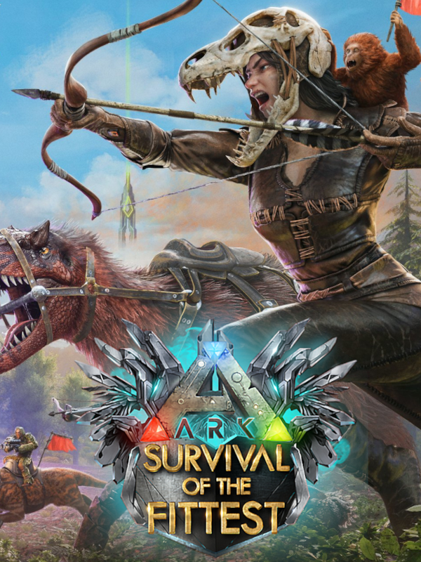

ARK: Survival Of The Fittest
ARK: Survival Of The Fittest
Detalhes
 |
|
| Tempo de jogo | Não Jogado |
| Última Atividade | Nunca |
| Adicionado | 07/06/2026 0:35:51 |
| Modificado | 07/06/2026 2:31:09 |
| Status de Conclusão | Not Played |
| Biblioteca | Steam |
| Fonte | Steam |
| Plataforma | PC (Windows) |
| Data de Lançamento | 15/03/2016 |
| Pontuação da Comunidade | 15 |
| Avaliação da crítica | |
| Pontuação do Usuário | |
| Gênero | Adventure Indie Role-playing (RPG) Shooter Strategy |
| Desenvolvedor | Efecto Studios Instinct Games Studio Wildcard Virtual Basement LLC |
| Editor | Studio Wildcard |
| Funções | Co-Operative Massively Multiplayer Online (MMO) Multiplayer |
| Links | Steam Official Website Twitch |
| Tag | |
Descrição
Arca: A sobrevivência do mais apto é um protótipo spin-off de arca: a sobrevivência evoluiu, colocando até 60 combatentes um contra o outro em uma luta de ritmo acelerado e cheia de ação pela sobrevivência, onde os jogadores são finalmente empurrados para um confronto final Liderando seus exércitos de dinossauros à batalha. O Ark Tsotf é o único Battle Royale que se concentra em confrontos em larga escala, combinados com uma sobreposição única de estratégia em tempo real. Ao usar táticas e estratégia para montar uma força de luta das criaturas primárias mais poderosas da história, apenas uma tribo sobreviverá!
Faça sua tribo e lute na melhor batalha do Dino Survival! Projetados para intensa concorrência e ação de dino em ritmo acelerado, os sobreviventes começam sua partida em um lobby de céu com tek-imbued para tribo. Quando a batalha começar, eles voam em direção a uma ilha a bordo de um quetzal gigante antes de ejetar e deslizar para a área de partida escolhida. Os concorrentes correm para gotas e lutarem? Eles correm para a selva e se escondem, procuram criaturas para domar e construir rapidamente seu exército de dino, ou morrem para um bando de compys curiosos? Faça uso do modo de vista para os pássaros, que permite que você comanda com mais eficácia-e controlem seu exército de dinossauros, possuam diretamente criaturas atualizáveis individuais e emitem comandos para sua equipe como estrategista final. Esta experiência exclusiva no estilo RTS está disponível na vida e também após a morte! Evite o “anel da morte” de encolhimento e dinâmico continuamente que força os competidores cada vez mais próximos ao longo do tempo e se torne a última tribo em pé. A caça está ligada!
Observação: esta versão atualmente é apenas um protótipo para testar a nova jogabilidade e os recursos-ainda não é um jogo competitivo totalmente completo. No entanto, incentivamos todos os sobreviventes a jogar e nos fornecer feedback para ajudar a desenvolver ainda mais e crescer o TSOTF!
Embora o objetivo principal da sobrevivência do mais apto permaneça o mesmo, voltamos à prancheta e introduzimos um número significativo de mudanças técnicas/de qualidade de vida/equilíbrio no modo de jogo que difere da arca: a sobrevivência evoluiu e o Versão original da sobrevivência do mais apto. Essas mudanças visam tornar a experiência mais simplificada e acessível, eliminando os aspectos complexos da elaboração e da curva de aprendizado acentuados e capacitando os jogadores a formar rapidamente seus exércitos dino e chegar à ação da criatura mais rapidamente.
Faça sua tribo e lute na melhor batalha do Dino Survival! Projetados para intensa concorrência e ação de dino em ritmo acelerado, os sobreviventes começam sua partida em um lobby de céu com tek-imbued para tribo. Quando a batalha começar, eles voam em direção a uma ilha a bordo de um quetzal gigante antes de ejetar e deslizar para a área de partida escolhida. Os concorrentes correm para gotas e lutarem? Eles correm para a selva e se escondem, procuram criaturas para domar e construir rapidamente seu exército de dino, ou morrem para um bando de compys curiosos? Faça uso do modo de vista para os pássaros, que permite que você comanda com mais eficácia-e controlem seu exército de dinossauros, possuam diretamente criaturas atualizáveis individuais e emitem comandos para sua equipe como estrategista final. Esta experiência exclusiva no estilo RTS está disponível na vida e também após a morte! Evite o “anel da morte” de encolhimento e dinâmico continuamente que força os competidores cada vez mais próximos ao longo do tempo e se torne a última tribo em pé. A caça está ligada!
Observação: esta versão atualmente é apenas um protótipo para testar a nova jogabilidade e os recursos-ainda não é um jogo competitivo totalmente completo. No entanto, incentivamos todos os sobreviventes a jogar e nos fornecer feedback para ajudar a desenvolver ainda mais e crescer o TSOTF!
Embora o objetivo principal da sobrevivência do mais apto permaneça o mesmo, voltamos à prancheta e introduzimos um número significativo de mudanças técnicas/de qualidade de vida/equilíbrio no modo de jogo que difere da arca: a sobrevivência evoluiu e o Versão original da sobrevivência do mais apto. Essas mudanças visam tornar a experiência mais simplificada e acessível, eliminando os aspectos complexos da elaboração e da curva de aprendizado acentuados e capacitando os jogadores a formar rapidamente seus exércitos dino e chegar à ação da criatura mais rapidamente.
- Arca reformulou do zero, concentrando-se em jogabilidade em ritmo acelerado e combate intenso em torno de batalhas de criatura em larga escala
- 88 dinossauros e criaturas no lançamento!
- Uma versão simplificada da ilha da Arca: a sobrevivência evoluiu
- Modos de jogo solo e baseados em tribo
- Revista a experiência da UI/UX para comunicar apenas o que é essencial e amigável para gamepad.
- O gerenciamento de inventário foi completamente removido para uma experiência de jogabilidade mais simples e rápida.
- Design focado em saques-A colheita foi removida e substituída por caixas de suprimentos baseadas em camadas, onde os itens são recompensados a todos os membros da sua tribo ou matando dinos por seus próprios recursos adicionais.
- Armas e armaduras foram modificadas e reequilibradas para a melhor experiência de ritmo acelerado e progressão sem complicações.
- Novo sistema de tempo: mate criaturas para tokens e depois gaste esses tokens em domar novos selvagens ou roubar famosos de seus inimigos!
- Modo de comandante. Um modo de vista para os pássaros que pode ser inserido a qualquer momento do jogo, permitindo que você controle seu exército de dinossauros (estilo RTS) com mais eficiência, possui diretamente criaturas individuais no seu arsenal e emitem comandos para sua equipe como o Ultimate estrategista (incluindo uma névoa de guerra acionada por Ally). Assim, depois que um jogador morreu, ele ainda pode participar da partida como comandante e continuar a controlar e possuir o dinossauro da equipe - eles podem continuar jogando e beneficiando seu time! Uma equipe só é totalmente derrotada quando tiveram todos os seus jogadores e seus dinossauros destruídos.
- Sistema de camadas de dino - Os dinos são recompensados por suas mortes com a EXP para avançar para um novo nível, proporcionando benefícios estatísticos fixos e eliminando o RNG no nível de dino.
- “Anel de morte” dinâmico exclusivo para cada rodada, permitindo uma jogabilidade emergente e vantagens imprevisíveis
- Um sistema de ping de pings inteligente para ajudar a se comunicar dentro das equipes
- Os ""banners de guerra"" pintados personalizados permitem que as tribos mostrem seu espírito de equipe em bandeiras em seu exército de dinossauros!
- Invocar chefes da arca para fortalecer seu arsenal nesta experiência final do exército de dino dino
- Uma trilha sonora personalizada orquestrada ao vivo foi escrita pelo premiado compositor Gareth Coker de Ori e The Blind Forest and Ark: The Animated Series.